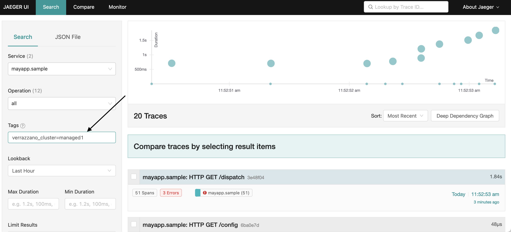

Jaeger Tracing
Jaeger is a distributed tracing system used for monitoring and troubleshooting microservices. For more information on Jaeger, see the Jaeger website.
Install Jaeger Operator
To install the Jaeger Operator, enable the jaegerOperator component in your Verrazzano custom resource. Here is
an example YAML file that enables the Jaeger Operator. Verrazzano installs the Jaeger Operator in the
verrazzano-monitoring namespace. If OpenSearch and Keycloak components are enabled in the Verrazzano custom resource,
then a default Jaeger instance is also created by the Jaeger Operator in the verrazzano-monitoring namespace.
apiVersion: install.verrazzano.io/v1beta1
kind: Verrazzano
metadata:
name: verrazzano
spec:
profile: prod
components:
jaegerOperator:
enabled: true
The Jaeger Operator will create Service custom resources for query and collection. After applying the Verrazzano
custom resource, listing Jaeger resources will show output similar to the following.
$ kubectl get services,deployments -l app.kubernetes.io/instance=jaeger-operator-jaeger -n verrazzano-monitoring
NAME TYPE CLUSTER-IP EXTERNAL-IP PORT(S) AGE
service/jaeger-operator-jaeger-collector ClusterIP 10.96.120.223 <none> 9411/TCP,14250/TCP,14267/TCP,14268/TCP 79m
service/jaeger-operator-jaeger-collector-headless ClusterIP None <none> 9411/TCP,14250/TCP,14267/TCP,14268/TCP 79m
service/jaeger-operator-jaeger-query ClusterIP 10.96.209.196 <none> 16686/TCP,16685/TCP 79m
NAME READY UP-TO-DATE AVAILABLE AGE
deployment.apps/jaeger-operator-jaeger-collector 1/1 1 1 79m
deployment.apps/jaeger-operator-jaeger-query 1/1 1 1 79m
Customize Jaeger
Verrazzano installs the Jaeger Operator and Jaeger using the jaeger-operator Helm chart. Using Helm overrides specified in the Verrazzano custom resource, you can customize the installation configuration. For more information about setting component overrides, see Customizing the Chart Before Installing.
Customize a Jaeger instance to use an external OpenSearch for storage
You can use the default Jaeger instance with an external OpenSearch cluster. The following example shows you how to configure Jaeger Operator Helm overrides in the Verrazzano custom resource to use an external OpenSearch cluster with a TLS CA certificate mounted from a volume and the user/password stored in a secret. For more details, see the Jaeger documentation.
- Prior to configuring the external OpenSearch for Jaeger in the Verrazzano custom resource, create a secret containing
the OpenSearch credentials and certificates in the
verrazzano-installnamespace. Jaeger will use these credentials to connect to OpenSearch.$ kubectl create secret generic jaeger-secret \ --from-literal=OS_PASSWORD=<OPENSEARCH PASSWORD> \ --from-literal=OS_USERNAME=<OPENSEARCH USERNAME> \ --from-file=ca-bundle=<path to the file containing CA certs> \ -n verrazzano-install - Use the Verrazzano custom resource to update the Jaeger resource:
apiVersion: install.verrazzano.io/v1beta1 kind: Verrazzano metadata: name: custom-jaeger-external-opensearch spec: profile: prod components: jaegerOperator: enabled: true overrides: - values: jaeger: create: true spec: strategy: production storage: type: opensearch options: es: # Enter your OpenSearch cluster endpoint here. server-urls: <External OpenSearch URL> index-prefix: jaeger tls: ca: /verrazzano/certificates/ca-bundle secretName: jaeger-secret volumeMounts: - name: certificates mountPath: /verrazzano/certificates/ readOnly: true volumes: - name: certificates secret: secretName: jaeger-secret
Enable the Service Performance Monitoring experimental feature
To enable the Jaeger Service Performance Monitoring experimental
feature in the default Jaeger instance created by Verrazzano, use the following Verrazzano custom resource. Verrazzano
sets jaeger.spec.query.options.prometheus.server-url to the Prometheus server URL managed by Verrazzano, if it exists.
To configure an external Prometheus server for your use case, override jaeger.spec.query.options.prometheus.server-url,
jaeger.spec.query.options.prometheus.tls.enabled and jaeger.spec.query.options.prometheus.tls.ca appropriately in
the Verrazzano custom resource. For more details, see the Jaeger documentation.
apiVersion: install.verrazzano.io/v1beta1
kind: Verrazzano
metadata:
name: custom-jaeger
spec:
profile: prod
components:
jaegerOperator:
enabled: true
overrides:
- values:
jaeger:
spec:
query:
metricsStorage:
type: prometheus
Disable default Jaeger instance creation
To disable the default Jaeger instance created by Verrazzano, use the following Verrazzano custom resource:
apiVersion: install.verrazzano.io/v1beta1
kind: Verrazzano
metadata:
name: custom-jaeger
spec:
profile: prod
components:
jaegerOperator:
enabled: true
overrides:
- values:
jaeger:
create: false
Jaeger Operator Helm chart values that cannot be overridden
The following Jaeger Operator Helm values are not supported to be overridden in the Verrazzano custom resource:
nameOverridefullnameOverrideserviceAccount.nameingress.enabledjaeger.spec.storage.dependencies.enabled
If you try to override the above Helm values in the Verrazzano custom resource, the request will be rejected and an error message returned.
NOTE: Verrazzano does not support Jaeger Spark dependencies
and hence the Helm chart value jaeger.spec.storage.dependencies.enabled, which is set to false for the Jaeger
instance managed by Verrazzano, cannot be overridden.
Configure an application to export traces to Jaeger
The Jaeger agent sidecar is injected to application pods by the
"sidecar.jaegertracing.io/inject": "true" annotation. You may apply this annotation to namespaces or pod controllers,
such as Deployments. The subsequent snippet shows how to annotate an OAM Component for Jaeger agent injection.
apiVersion: core.oam.dev/v1alpha2
kind: Component
metadata:
name: example-component
spec:
workload:
apiVersion: core.oam.dev/v1alpha2
kind: ContainerizedWorkload
metadata:
name: example-workload
annotations:
# The component's Deployment will carry the Jaeger annotation.
"sidecar.jaegertracing.io/inject": "true"
If you have multiple Jaeger instances in your cluster, specify the name of the Jaeger instance to which you intend to
send the traces, as a value for the annotation sidecar.jaegertracing.io/inject. For more details,
see the Jaeger documentation.
NOTE: Using the Jaeger agent is not supported in Helidon 3.x. To use Jaeger tracing,
the Helidon application should connect directly to the Jaeger collector. See the following example YAML file, where
"TRACING_HOST" is set to "jaeger-operator-jaeger-collector.verrazzano-monitoring" and "TRACING_PORT" to "9411".
For Jaeger tracing in a multicluster Verrazzano environment,
set the "TRACING_HOST" to "jaeger-verrazzano-managed-cluster-collector.verrazzano-monitoring.svc.cluster.local".
apiVersion: core.oam.dev/v1alpha2
kind: Component
metadata:
name: hello-helidon-component
spec:
workload:
apiVersion: oam.verrazzano.io/v1alpha1
kind: VerrazzanoHelidonWorkload
metadata:
name: hello-helidon-workload
labels:
app: hello-helidon
version: v1
spec:
deploymentTemplate:
metadata:
name: hello-helidon-deployment
podSpec:
containers:
- name: hello-helidon-container
image: "ghcr.io/verrazzano/example-helidon-greet-app-v1:1.0.0-1-20220513221156-7da0d32"
env:
- name: "TRACING_SERVICE"
value: "hello-helidon"
- name: "TRACING_PORT"
value: "9411"
- name: "TRACING_HOST"
value: "jaeger-operator-jaeger-collector.verrazzano-monitoring"
ports:
- containerPort: 8080
name: http
View traces on the Jaeger UI
After the installation has completed, you can use the Verrazzano Jaeger UI to view the traces. For information on how to get the Verrazzano Jaeger UI URL and credentials, see Access Verrazzano.
Configure the Istio mesh to use Jaeger tracing
You can view Istio mesh traffic by enabling Istio’s distributed tracing integration. Traces from the Istio mesh provide observability on application traffic that passes through Istio’s ingress and egress gateways.
Istio tracing is disabled by default. To turn on traces, customize your Istio component like the following example:
apiVersion: install.verrazzano.io/v1beta1
kind: Verrazzano
metadata:
name: verrazzano
spec:
profile: prod
components:
jaegerOperator:
enabled: true
istio:
overrides:
- values:
apiVersion: install.istio.io/v1alpha1
kind: IstioOperator
spec:
meshConfig:
enableTracing: true
After enabling tracing, Istio will automatically configure itself with the the Jaeger instance managed by Verrazzano in your cluster, and Istio-injected pods will begin exporting traces to Jaeger.
To export traces to a different Jaeger instance than the one managed by Verrazzano, set
meshConfig.defaultConfig.tracing.zipkin.address to the intended Jaeger Collector URL.
Any new Istio-injected pods will begin exporting traces to the newly configured Jaeger instance. Existing pods require
a restart to pull the new Istio configuration and start sending traces to the newly configured Jaeger instance.
apiVersion: install.verrazzano.io/v1beta1
kind: Verrazzano
metadata:
name: verrazzano
spec:
profile: prod
components:
jaegerOperator:
enabled: true
istio:
overrides:
- values:
apiVersion: install.istio.io/v1alpha1
kind: IstioOperator
spec:
meshConfig:
enableTracing: true
defaultConfig:
tracing:
zipkin:
address: <address:port of your Jaeger collector service>
Istio’s default sampling rate is 1%, meaning 1 in 100 requests will be traced in Jaeger.
If you want a different sampling rate, configure your desired rate using the meshConfig.defaultConfig.tracing.sampling Istio installation argument.
apiVersion: install.verrazzano.io/v1beta1
kind: Verrazzano
metadata:
name: verrazzano
spec:
profile: prod
components:
jaegerOperator:
enabled: true
istio:
overrides:
- values:
apiVersion: install.istio.io/v1alpha1
kind: IstioOperator
spec:
meshConfig:
enableTracing: true
defaultConfig:
tracing:
sampling: 25.0
Management of Jaeger indices in OpenSearch
To clean old Jaeger data from OpenSearch, Verrazzano uses the index management provided by Jaeger. By default, a cron job with the following default values is created to clean old traces. To configure it to your use case, override the following Jaeger spec values in the Verrazzano custom resource with your desired values.
storage:
type: opensearch
esIndexCleaner:
enabled: true // turn the cron job deployment on and off
numberOfDays: 7 // number of days to wait before deleting a record
schedule: "55 23 * * *" // cron expression for it to run
Jaeger tracing in a multicluster Verrazzano environment
If the Jaeger Operator component is enabled in the managed cluster, after successful registration with the admin cluster, a Jaeger collector service runs in the managed cluster, which exports the traces to the OpenSearch storage configured in the admin cluster.
NOTE: Traces are exported to the admin cluster only when the Jaeger instance in the admin cluster is configured with the OpenSearch storage.
Listing Jaeger resources in the managed cluster shows output similar to the following.
$ kubectl get jaegers -n verrazzano-monitoring
NAME STATUS VERSION STRATEGY STORAGE AGE
jaeger-verrazzano-managed-cluster Running 1.34.1 production opensearch 11m
Configure the Istio mesh in a managed cluster to export Jaeger traces to the admin cluster
To export the Istio mesh traces in the managed cluster to the admin cluster, set meshConfig.defaultConfig.tracing.zipkin.address
to the Jaeger Collector URL created in the managed cluster that exports the traces to the OpenSearch
storage configured in the admin cluster.
Configure the Istio mesh on the managed cluster at the time of the Verrazzano installation, as follows:
apiVersion: install.verrazzano.io/v1beta1
kind: Verrazzano
metadata:
name: verrazzano
spec:
profile: managed-cluster
components:
jaegerOperator:
enabled: true
istio:
overrides:
- values:
apiVersion: install.istio.io/v1alpha1
kind: IstioOperator
spec:
meshConfig:
enableTracing: true
defaultConfig:
tracing:
zipkin:
address: jaeger-verrazzano-managed-cluster-collector.verrazzano-monitoring.svc.cluster.local.:9411
View the managed cluster traces
You can see the managed cluster traces from the Jaeger UI in the admin cluster only. To find the Jaeger UI URL for your admin cluster, follow the instructions for Accessing Verrazzano.
The spans include the Process tag verrazzano_cluster, which has the name of the managed cluster. To see the traces
for the managed cluster only, search based on the tag verrazzano_cluster=<managed cluster name>.
Sample output of Jager UI screens


Feedback
Was this page helpful?
Glad to hear it! Please tell us how we can improve.
Sorry to hear that. Please tell us how we can improve.